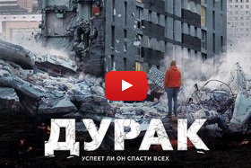
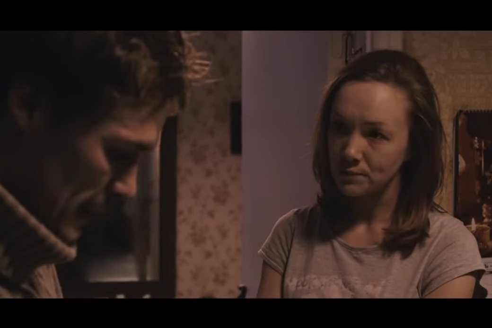
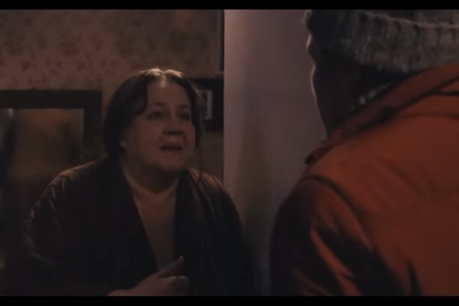
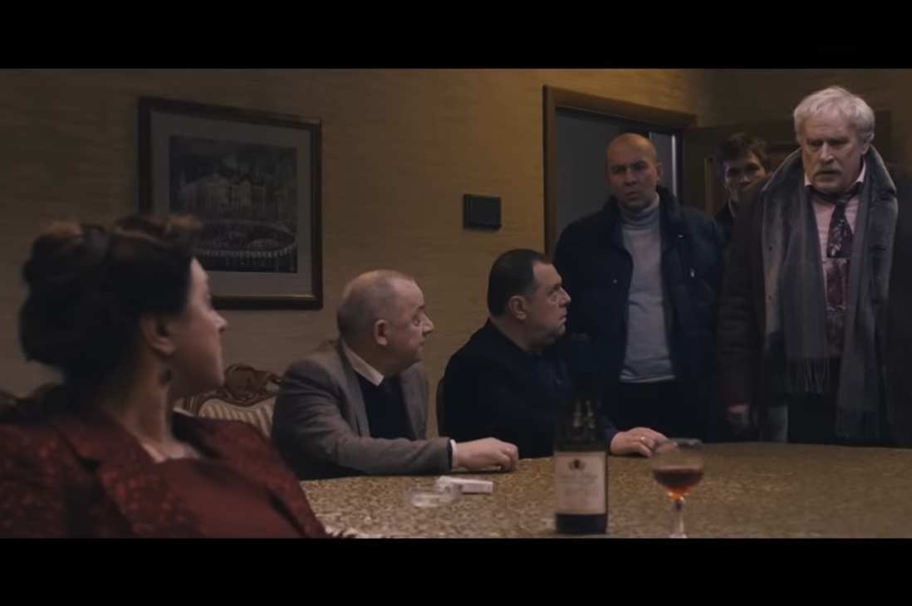
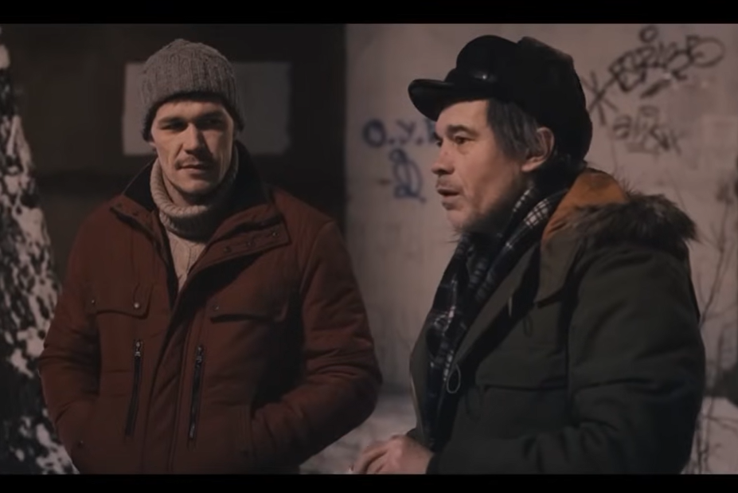
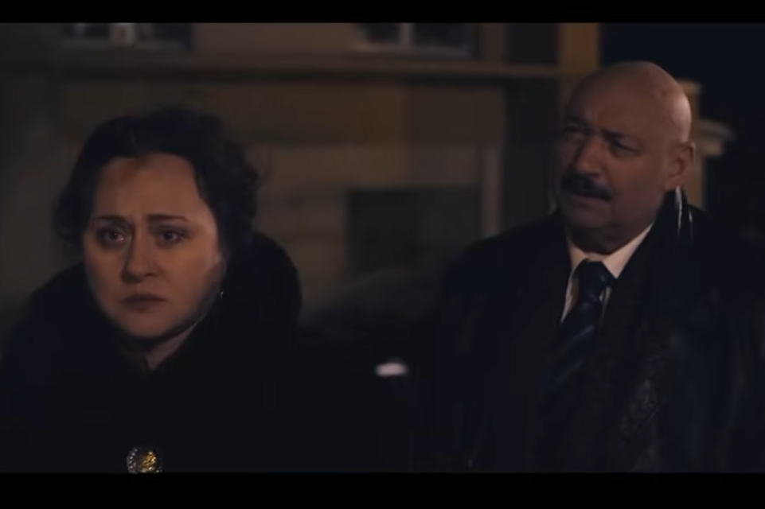
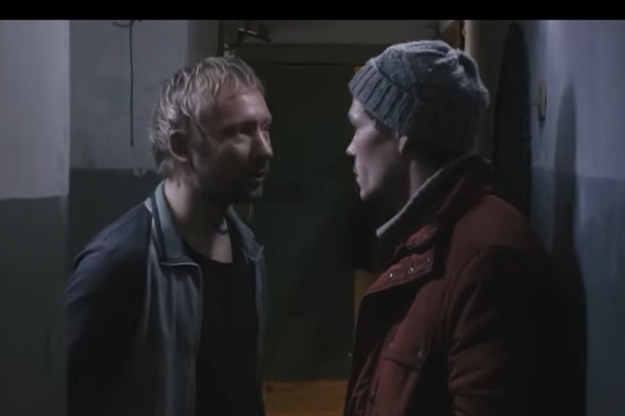
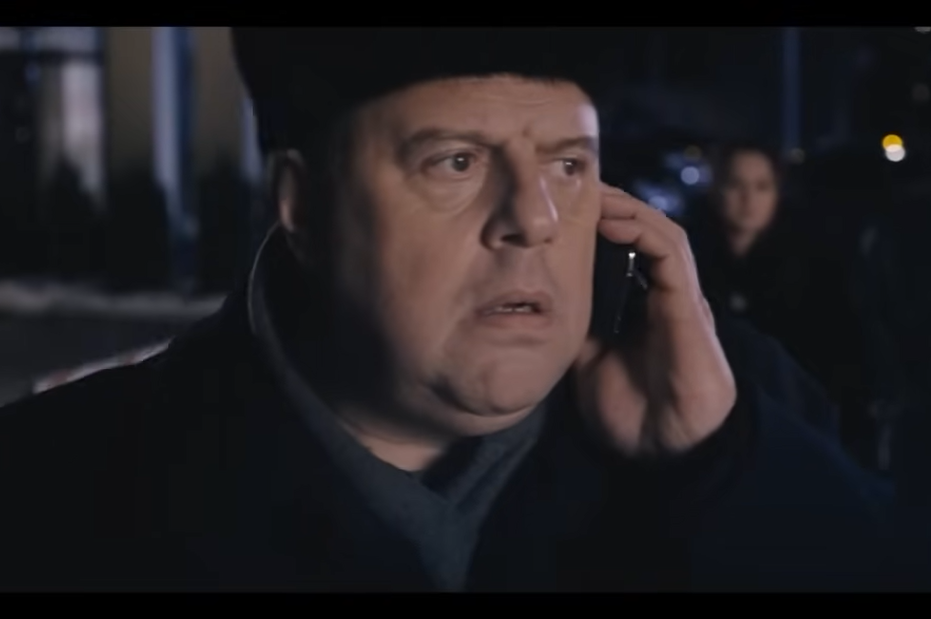
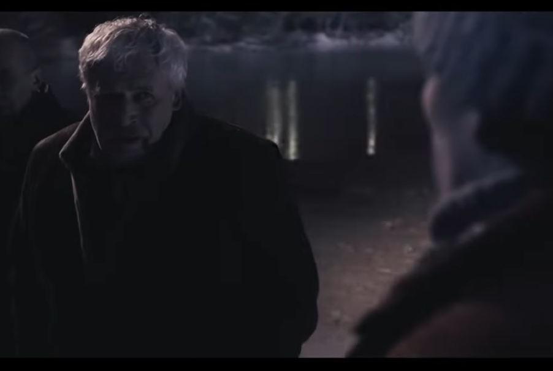

Before reading this post, I encourage you to watch the film – available in high quality by clicking the image below. All timestamps are based on this upload.

The film is commonly characterized as a social drama focused on the protagonist’s struggle against a heartless, corrupt system. The few reviews that mention the individual's moral dilemma being part of the plot, fail to explore it in depth. Meanwhile, this is the film's true essence; the bureaucratic apparatus and the underclass serve merely as a backdrop. The story could just as well be set in different circumstances without losing its universal significance.
If asked a simple question of what this work is really about, the answer – as brief as it is complete – would be: man. Not about Dmitry Nikitin the plumber, but about man as such – about what best characterizes him, what is at once his exclusive and defining feature: morality. Intrinsicly linked to free will, this is the recognition of good and the ability to be guided by it, regardless of other motives. The entire story revolves around the characters' struggles with their own consciences. The number of times the word 'man' or its negatives (шваль, скотина, свиньи) is placed in the mouths of the characters in relation to their mutual conduct, demonstrates the author’s intended quest for the essence of humanity.
For all the characters, the price for departing from righteousness is comfort, whether material or psychological; it is simply more convenient to live without the effort of upholding what is right.
The first antihero, an archetype of life passivity, is Nikitin's wife. She undermines his efforts as best as she can, seeking to keep a low profile. To her, the virtue of sacrifice is incomprehensible; she views her husband's actions as a potential threat, arising from the mere risk of disrupting someone’s peace – a sufficient reason for her to quietly sabotage him.
(3:48) Ты правда думаешь, что сдашь? (…) А оно надо вообще? (…) А ты и так вон всем надоел. (…) Скажут выпендриваешься.
(5:11) Дим, ну может хватит? Ну сколько можно гонять? Толку ноль.
(24:14) Ты понимаешь хоть, что ты ничего не добьёшься? (…) Панику поднимешь и что?
When things take a serious turn, instead of finally taking his side, she resorts to irony, openly showing how much she despises his steadfastness.
(1:33:28) Ну спасибо тебе. Жили, горя не знали.
(1:34:26) Связалась с юродивым, и мучаюсь.
For her, humanity is nothing more than existence, so she adopts a principle of minimal effort and risk.

The second antagonist is Nikitin’s mother, who bases her entire morality on the recognition of others. Instead of taking pride in her husband’s and son’s honorable actions, she views them as a burden – and even a source of shame.
(7:13) Да бросьте вы ту лавку. Чё вы с ней возитесь? Вон уже соседи смеются.
(8:30) У людей вон всё есть. А у нас: Стыдно в глаза смотреть.
(9:22) Ты человеком стань. Ну чтобы всё как у людей.
(10:37) Чтоб в тебя пальцем не тыкали. А в итоге в тебя и тычут. (…) Знаться никто не хочет.
To her, humanity means being part of the herd, both in a material and moral context.

The fact that these are the main character’s closest associates – and under whose constant influence he remains – only highlights the exceptional steadfastness of his attitude.
Officials, on the other hand, equate dignity with influence and wealth, believing that human status must be attained by climbing over the dead bodies of others. Any moral stance is contrary to the utilitarianism they profess.
(1:13:06) Я тебе помог человеком стать.
Not only do they despise those outside their caste…
(47:42) Одна шваль живёт.
…but they organically do not understand how it is possible to be guided by other motivations in life
(1:16:00) И откуда это ты такой взялся? Другой бы поглядел, рукой махнул, да и спать лёг.
The opposite of all the above attitudes combined is Nikitin's father, who does not fear acting on his principles, regardless of rejection or the loss of material gain.
(11:58) Да это ж чужое. (…) Они теперь не здороваются.
Nikitin adopted his father’s system of values, viewing humanity as a moral duty.
(1:32:34) А Матвеевич человек. Я не ожидал.
(1:37:21) Неужели ты не понимаешь, что мы живём как свиньи, и дохнем как свиньи, только потому что мы друг другу никто.

Nikitin’s actions illustrate an inherent human ability to do good for its own sake. His conduct is neither affective nor driven by profit or recognition; on the contrary, the people he protects are utterly repulsive, and his actions bring him only personal danger and the contempt of those around him.
The film also perfectly illustrates how weak people with a distorted value system instinctively seek to discredit an honorable man when confronted by him.
(4:03) Прям как маленький.
(9:32) Да дурак ты!
(44:02) Пойдём, баламут.
Nevertheless, the situation they found themselves in because of Nikitin, triggers a certain cognitive dissonance in some of them. They understand the evil of their actions, but it is Nikitin who confronts them with their own weakness and depravity. He becomes a thorn in their conscience, which each of them deals with in his own way.
The wife, in a final defensive reflex, resorts to emotional manipulation.
(1:22:42) А мы с Антоном не люди?
(1:36:12) Ты нас бросаешь?
In turn, the mayor finds self-justification for her lack of scruples in her actual or alleged harms, feeling entitled to take from life even at the cost of others. An ordinary, honest life is beneath her dignity.
(59:07) А я жить нормально хочу.
The mayor’s husband, a local baron, constructs a specific philosophy to rationalize his conduct.
(1:12:45) Здесь либо человеком живут либо скотиной. На всех хорошей жизни всё равно не хватит.
(1:29:26) Бог такую жизнь придумал. И нас жить заставил.


In the case of the bum, the reaction is primitive violence towards the person who disturbs his inner peace.
The mother appears to be a completely uncritical character until the very end, showing no signs of self-reflection. The words:
(1:39:33) Сволочь! Никого не жалеешь.
said just as her son heroically puts himself at risk for the good of many, reveal her complete moral blindness.


It is much the same with the police chief, who carries out shameful orders mechanically until the end. Fedotov, on the other hand, is only struck by conscience when his fate is already sealed.
The pressure of events eventually leads to a collapse in the attitude of Nikitin's father himself, the moral authority who renounces his own ideals.
(1:41:53) И тебя жизни не научили.
In this context, the final phrase:
(1:42:44) Никогда тут по-другому не будет.
ceases to be a socio-political commentary and becomes a bitter spiritual diagnosis of the state of humanity.
P.S.
A word on the subject from the director himself: link